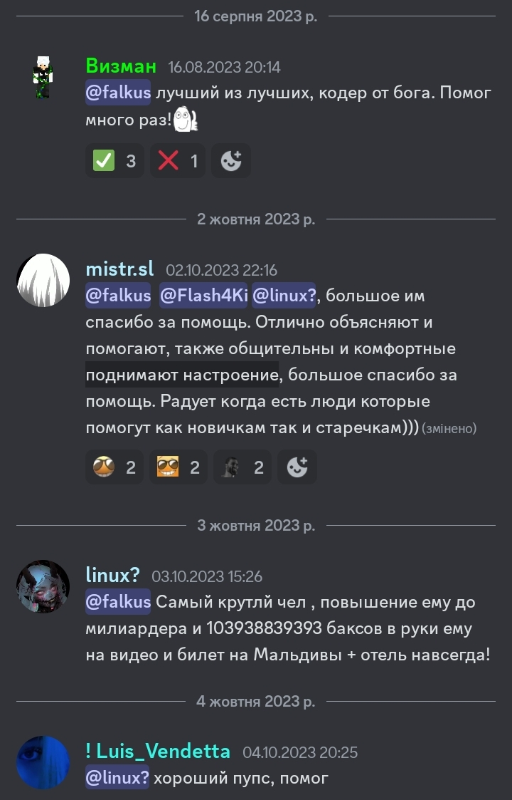
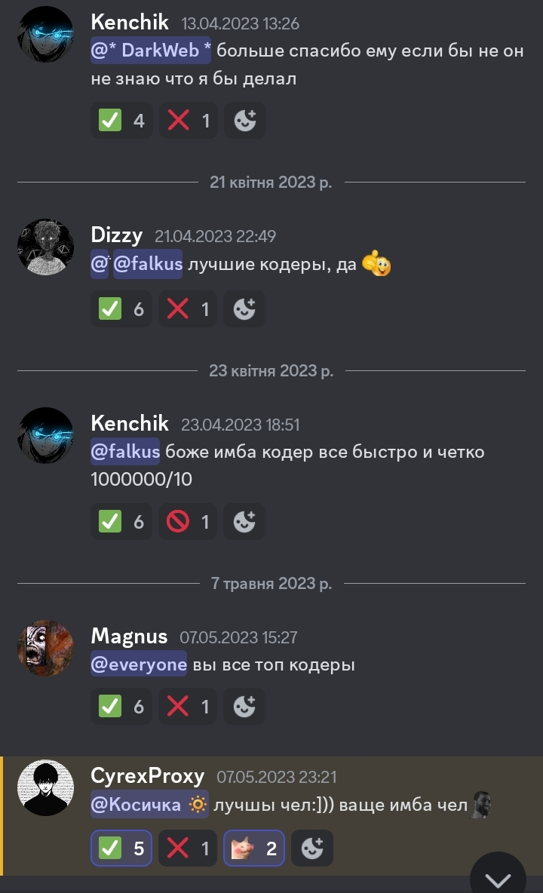
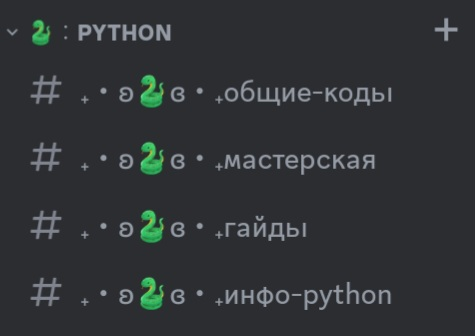
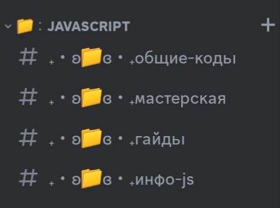
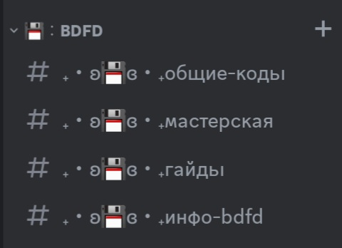
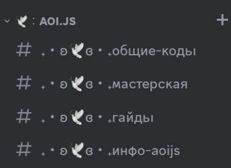

Твій осередок для вивчення, допомоги та спілкування у світі програмування.
Незалежно від твого рівня — новачок чи досвідчений розробник, у нас є експерти, готові допомогти з такими бібліотеками, як:
Отримуй вичерпні відповіді та найновіші поради від наших експертів.
Щоб забезпечити продуктивне спілкування, перш ніж задавати питання, звертай увагу на правила серверу. Вони допоможуть тобі отримати точну та швидку відповідь від наших підтримуючих членів.
Спільнота росте завдяки твоїй активності та підтримці!
Сервер створений та розвивається талановитим розробником MZecker. Його відданість та ентузіазм покладені в кожну аспект серверу.
У нас є спеціальний канал для відгуків, де як професійні розробники, так і новачки можуть поділитися своїми думками та враженнями.
 На сервері ти знайдеш різні категорії з кодами, гайдами та іншою корисною інформацією:
   